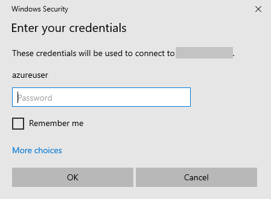
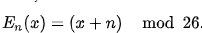
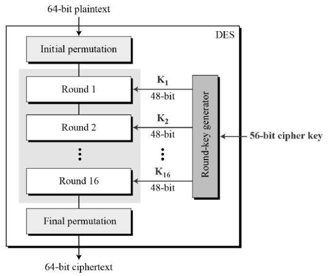
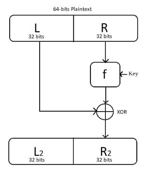
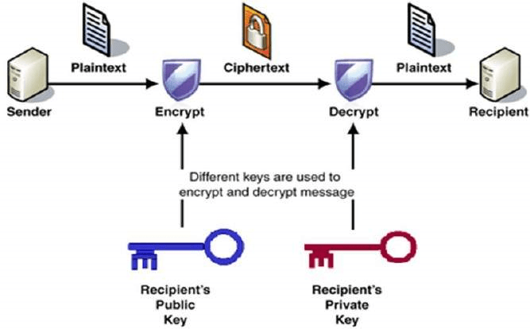

A Beginner's Guide to Cyber Security

This article looks at the fundamentals of cybersecurity, including basic terms and
terminologies of security, the importance of data, attributes of data. and the CIA triad,
confidentiality, integrity, and availability. It also looks at cybersecurity domains and
different types of encryption techniques, like asymmetric and symmetric encryption.
We will be covering the following topics:
What are Cyber, Cybersecurity, and Cyberspace?
Terms and Terminologies of Security
Cyber Security Domains
Network Models
Cyber Security Certifications
Cyber Threats
What is meant by the term “Cyber”?
Cyber means anything that is digital. It can be your devices that are performing the
digital computation. Anything that is related to the Internet falls under the category of
Cyber.
How big is cyberspace ?
While Cyberspace should not be confused with the internet, the term is used to
represent identities or events that take place in the communication process itself. For
example, think of a website, it also exists in CyberSpace. Whether you share a post,
upload a picture, or even send a message, all these social interactions exist in Cyber
Space. This Cyber Space is expanding not in minutes but in seconds. These all events
are taking place not on their physical locations but "in cyberspace". You can see an
image below consisting of various digital devices that are connected through the
internet. Their whole communications exist in cyberspace.
What is Cybersecurity?
The term cybersecurity is used to refer to the security offered through online services to
protect your online information.
Cybersecurity refers to the technologies and processes designed to protect
computers, networks, and data from unauthorized access, vulnerabilities and
attacks delivered via the Internet by cybercriminals
Cybersecurity is important for network, data and application security.
The Need for Cyber Security
Cybersecurity is necessary because it helps secure data from threats such as
data theft or misuse. It also safeguards your system from viruses
With an increasing amount of people getting connected to the Internet, security
threats that cause massive harm are increasing as well.
Terms and Terminologies of Security
Security vs Information Security
Security can be any physical security, it includes everything in security and Information
Security can also be any digital security and is bound to information.
IT Security vs Network Security
Information Security(IT) is of wider scope includes web, network anything related to IT,
and network security is bounded to network.
System Security includes security of
devices like mobile phones, computers, etc.
Cyber Security vs IT Security
Cyber Security includes digital security and IT security includes cybersecurity and also
includes the physical security of systems highest which cybersecurity doesn’t include
physical security of systems.
Note
InfoSec is short for Information Security and Pentest is short of Penetration Testing.
Domains of Cyber Security
Below are the domains of Cybersecurity:
1. Access Control Systems and Methodology
2. Telecommunications and Network Security
3. Business Continuity Planning and Disaster Recovery Planning
4. Security Management Practices
5. Security Architecture and Models
6. Law, Investigation, and Ethics
7. Application and Systems Development Security
8. Cryptography
9. Computer Operations Security
10.Physical Security
Access Control Systems and Methodology
The main purpose of Cyber Security is to protect your data. So first, we will get to know
more about Data and the various access control systems and methodology.
Six Dimensions of Data Quality Assessment
A Data Quality(DQ) Dimension is a recognized term used to describe the feature of data
that can be assessed or measured against defined standards in order to measure the
quality of data.
The six core data quality dimensions are:
1. Consistency
2. Completeness
3. Correctness
4. Accessibility
5. Timeliness
6. Accuracy
States of Data
Understanding the different states of digital data can be helpful for you to select the
different sorts of security measures and encryption techniques to apply to the data.
Here we will discuss three states of data.
Data at rest/storage
Data at rest refers to the data that has been stored on some sort of physical medium or
backup medium like data stored on hard disks or even in mobile devices. What makes
its data at rest that data is in an inactive form and is not currently being transmitted or
processed.
Data in motion/transmission
The second phase of data is in motion. Data in motion is currently transmitting on a
network or is sitting on a computer's RAM ready to be read, updated, or processed. It
can be emails or data transferred through FTP or SSH.
Data in process
The third phase of data is in process or use. This state of data is not being stored
passively on a storage medium. This is the data that is being processed by one or more
applications. This is the data currently being generated, updated, appended, or erased.
CIA (Confidentiality- Integrity - Availability)
Confidentiality, Integrity, and Availability, known as the CIA triad, is a model designed to
guide policies for information security within an organization. We will look more in-depth
at each of the three.
Confidentiality
It ensures that computer-related assets are accessed only by authorized parties
sometimes called secrecy or privacy Measure undertaken to prevent sensitive
information from reaching the wrong people and making sure that an authorized
person can access it.
The technique used is Encryption
Encryption to ensure Confidentiality
Suppose we want the “HELLO”, we can apply encryption technique to replace every
alphabet of HELLO with its neighbor alphabet like H replace with I, E with F, etc which
makes the word not meaningful. Then we decrypt with the same technique used on
another side.
Bitlocker is a disk/drive-level encryption. We cannot apply BitLocker on file.
Windows use the NTFS file system. There is EFS(Encrypted File System)-File
Level Encryption. Right-click on file (Compress the contents in blue color).
Features of EFS
There are two colors that show encryption and decryption.
This whole process depends on Policies. To keep backup of data, when an employee
resigns, the company formats the system which also loses the BitLocker keys and other
stuff.
Types of Encryption
There are two top-level types of encryption, Symmetric and Asymmetric
Symmetric Encryption
Uses the Same Key to encrypt or decrypt data.
Consider a desktop password manager application. You enter your password
and they encrypted with your own personal key. When the data is to be retrieved,
the same key is used, and the data is decrypted
Asymmetric Encryption
Uses a Private key and Public Keypair
Either key can encrypt but a single key can’t decrypt its own decrypted data. To
decrypt, you need the paired key.
Asymmetric encryption is used for things like Transport Layer Security(TLS) used
in HTTPS and data signing


Access Controls
Access controls authenticate and authorize individuals to access the information they
are allowed to see and use.
1. Something you know - (you know passwords)
2. Something you are - (biometric scan)
3. Something you have - (ATM card)
4. Something you do - (signature style)
Integrity of Data
Integrity
It means that assets can be modified only by authorized parties or only in authorized
ways. Ensures that information is in a format that is true and correct to its original
purposes. It involves maintaining the consistency, accuracy, and trustworthiness of data
in its entire life cycle.
The technique used is Hash
Hash
Hash Calculator takes a file as input and applies algorithms. The purpose of hashing is
to show that the original file is not modified.
Let's have a practical implementation of hashing using the Microsoft File Checksum
Integrity Verifier. You can download it from the internet.

You need to open a command prompt in the directory where your file is located. We will
check the integrity of a text file. To apply this hashing technique:
fciv "filename with the extension" hashing algorithm => fciv readme.txt -sha1
Here you can see a Hash code generated of that file. Now we will modify the file by adding
some letters in the text file and will again apply the hashing technique on the same file.
Here, you can see the Hash Code has been changed. This shows that the file has been
modified and no longer in its original form. If we revert the changes that we made in the file and
again apply the hashing technique, let's see what happens.
Below, you can see a diagram where there is plaintext on which a hash function has been
applied. After applying the hash function, it generates a hashed text. This hashing technique is
also being used in Cyber Forensics.

Availability of Data
This means that assets are accessible to authorized parties at appropriate times. High
Availability (99.9%) where 0.1% is error rate and when increased 99.999 uptime 0.0001 error
rate. It is implemented using methods such as hardware maintenance, software patching, and
network optimization.
A classic example of a loss of availability to a malicious actor is a Denial of Service Attack
(DOS).
SLA
Service Level Agreement is a binding document. It is a commitment between a service provider
and a client. Particular aspects of service - quality, availability, responsibilities are agreed
between the service provider and service user If the service user doesn’t receive files in time
then service providers are fined.
Before discussing the types of DOS attacks, let's have a look at Ping Command.
Ping Command
Ping is a computer network administration software utility used to test the
reachability of a host on an Internet Protocol network. A simple way to verify that
a computer can communicate over the network with another computer or network
device
Ping 127.0.0.1 (127.0.0.1 is a loopback address)
Types of DOS Attacks
Will discuss a few of the DOS Attacks:
1. Ping of Death
2. Ping of Flood
3. Smurf Attack
4. Fraggle Attack
Ping of Death
A Ping of Death attack is a Denial of Service (DoS) attack, in which the attacker aims to
disrupt a targeted machine by sending a packet larger than the maximum allowable
size, causing the target machine to freeze or crash.
Ping of Flood
Ping flood, also known as ICMP flood, is a common Denial of Service (DoS) attack in
which an attacker takes down a victim’s computer by overwhelming it with ICMP echo
requests, also known as pings. Example: Education Board Website.
Fraggle Attack
A Fraggle attack is a type of DOS attack where the attacker sends a large number of
spoofed UDP traffic to a router's broadcast address within a network.
Configuring A Custom Domain Name For Your Github Pages Site Using Azure App Service Domains
Introduction
This article looks at how to configure the custom domain name for your Github Pages site using Azure service
-App Service Domains. App Service Domains allows you to purchase and manage a domain name within a few minutes.
We will look at simplified domain life cycle management and purchasing and managing domains for your Azure Services.
So grab a cup of coffee and follow along through this article up to the end, and you will be able to configure the
custom domain name for your very own Github Page site.
Will be covering the following topics:
- Step 1: How to set up a Github Page
- Step 2: How to purchase a Custom Domain name through Azure App Service Domains(don't worry will have something special for students)
- Step 3: How to install Dig for DNS Lookup.
- Step 4: Configuring the DNS record.
Step 1 - How to set up a Github Page
GitHub Pages are public webpages hosted and easily published through GitHub. The quickest way to get up and running
is by using the Jekyll Theme Chooser to load a pre-made theme. You can then modify your GitHub Pages’ content
and style remotely via the web or locally on your computer.
The very first thing that you need to do is to have a Github Page (Note: if you already have any website and wants
to configure a custom domain for that so then you can skip this step and can continue with Step 2 that is purchasing
a custom domain name through Azure App Service Domains).
We have to create a new Repository on our Github account through the link
https://github.com/new.

In the repository name, you have to type your own Github Username, like in my case its saad2128 but yours will be
different. You have to fill that repository name with username.github.io .Here, you will notice that the username
will be your Github username and .github.io will remain the same. I already have one, so I am not creating another
one and in my case, it's saad2128.github.io. After writing the repository name, you have created the repository.
After creating the repository, you will be able to see an empty repository where you can add your website code.
It can be your portfolio or anything you want to show something to the world. If you don't have any portfolio
or website available to host now then you can use any of the themes available on the Internet to follow along with
this article. (Note: Github Pages are suitable to host static websites or portfolios up to limited space, it's
not preferred to use it for E-Commerce websites or something like that).
Now you have to upload the files of your project. There are two options available; you can upload the files using
Git commands, or you can simply upload the files through the upload button available
After uploading the files, go to settings of the repository in the top right corner and scroll down to Github Pages.
Here, you will see a message displaying that your site is published at username.github.io (Note: I have already
configured custom domain name for my repository so it's showing my custom domain name but in your case, it
will show your username.github.io). You can copy that link username.github.io and paste it in your browser and
you can see that your website is live and hosted on Github.
Hurray!! you have got your Website live and being hosted on Github. But that's not the end. We have to give
our Website a cool custom domain name so that we can share it with our clients and recruiters so that I will give
a more professional look. Here's a screenshot of how your website will be hosted with username.github.io,
it is before configuring our custom domain name.

Step 2 - How to Purchase a Custom Domain Name through Azure App Service Domains
You have done a great job up to now and have successfully set up your Github Page! Now we have to buy a cool custom
domain name for your Github Page. For this, you have created an account on Microsoft Azure through the
link.
Microsoft has something special for students to help them out to use Azure for free and its called Azure for Students.
Students just have to use sign up an account using their University email and they will get $100 Azure Credits to
use Azure Services and learn the best from it. Students can get their free accounts through this
link.

Once you have logged in to your account, you will see an Azure Portal. In the search bar, look for App Service Domains.

After clicking on Create App Service Domain, you will see a dashboard to search for your custom domain and choose
your subscription (in the case of students, it will be Azure for students. In my case, I have used Visual Studio
Enterprise Subscription ). Go through your contact information, privacy protection, legal terms, and then click
on the Create button.
After clicking on create, it will take a couple of minutes for the deployment. Afterward, you can your custom domain
name details.

Hurray! You have purchased your very own custom domain name through Azure App Service Domain
 . Now we have completed step 2.
. Now we have completed step 2.
 . Now we have completed step 2.
. Now we have completed step 2.
Step 3 - How to Install Dig for DNS Lookup
The Domain Name System(DNS) is the phonebook of the internet. Web Browsers interact through Internet Protocol Addresses.DNS
translates domain names to IP addresses so browsers can load Internet resources. Each device connected on the Internet
has a unique IP address that other machines use to find the device.
Download the dig command tool for windows and perform advanced DNS queries using dig command on windows. The
dig command which comes as a part of Linux is very useful for performing DNS lookups on domain names and provides
detailed information like TTL and class type. It is now possible to use the dig command on windows also
First, go
here and look for the BIND, then click on the download button.
When you download and extract the files, search for .dll files and dig.exe in the folder and copy /paste all these
11 files in C:\Windows\System32

After that, open any command prompt. In my case, I am using Git Bash. type dig example.com.Here, example.com will
be your domain name.

Hurray!! you have figured it out how to install dig and how to perform DNS lookup.
Step 4 - Configuring the DNS record
The last step is to configure the DNS record of your custom domain so that your domain will be connected to the
Github Page you created at the very start of this Article. So again let's move to Azure Portal and click on
the Manage DNS Records. After clicking on it, you will DNS settings for your domain. After that, click on
Record Set.
Search for a record set through the search bar given below. If you find www in the search then it will be your
subdomain otherwise it will be an apex domain. In my case, its an apex domain. Next, we have to create a record.
Point your apex domain to the IP addresses for GitHub Pages provided in the screenshot below or you can have it
from
here. After writing the IP addresses click OK Note that IP Addresses given in the screenshot will remain
the same. This will point your domain to Github but we still need to do some more configuration to point the domain
to your respective Github Page.

After that, once again go back to your Github account and go to the root folder of your repository you just created
at the start of this article and create a new file named CNAME. All alphabets are capitalized. In that file,
write the complete domain name of the configured DNS Settings.

The last step is to go to settings of your Github Repository and scroll down Github Pages section, where you have
to write your domain name in the custom domain section and save it and also click on Enforce HTTPS, which
prevents others from tampering with traffic to your site.

You can see that the Github Page shows a message that your domain has been hosted on your custom domain.

All done, you have successfully configured custom domain to your Github Page using Azure App Service Domains. Now
copy/paste your domain to the browser and here you go!


Conclusion
What’s next?
This article was meant to let you know how to configure a custom domain name to your Github Page using Azure App
Service Domains. Feel free to experiment along. Next time, we need to have more articles on Networking
Create An Azure Virtual Machine Running A Windows Server
Introduction
Microsoft Azure’s Infrastructure as a Service offering gives you the ability to build, configure, and host
your virtual infrastructure in the cloud. However, this offering is not only limited to spinning up virtual machines.
With Azure, you can create complex virtual networks that span the globe, store data anywhere, and take advantage
of the innovative, world-leading cloud services, and the global footprint Azure offers. Sometimes we face difficulties
when running a Virtual Machine on a system that has fewer specifications including less RAM etc, that causes our
system to slow that will also the efficiency of applications we are running on.
In this article, we are going to create an Azure Virtual Machine that will run Microsoft Windows Server, which will resolve this problem. As long as you have a good internet
connection, you can connect to your virtual machine from any machine.
First of all sign in to your Azure Account and go to
Azure Portal.
Then click on “Virtual Machine” from the list of services available.

Click on “Add” at the left side of the screen
- After clicking on Virtual Machine, you will see an interface “Create a virtual machine”.
- Select the subscription you want to select for this Virtual machine, your subscription may vary.
- Create a new resource group.
- Enter the virtual machine name.
- In the Image section, select the operating system you want to run in the virtual machine. In our case, we are selecting Windows Server 2019.
- In the Size section, select the specs you want for your Virtual Machine. Increasing the size of the virtual machine will also affect the price of that.

- Select a username and password for your virtual machine. This username and a password will be used later on when setting up Remote Desktop connection so make sure to note the username and password.
- Select inbound ports HTTP and RDP that will be used for Remote Desktop Connection.
- After filling all the details, click on Review+Create. After reviewing, deployment of your Virtual Machine will start.
The deployment will take a couple of minutes to complete. After the deployment completes, you can view your Virtual
Machine.
Then click on Connect-> RDP
Then click on Download RDP File.

After downloading the RDP file, open that file and you will see a prompt requiring username and password. Here
the username and password will be used that was used earlier during the creation of the Virtual Machine. If
you enter any other username or password then it will give you a Logon error so make sure you are using the
same username and password used during the creation of Azure Virtual Machine.

After entering the username and password, click OK. A screen will show Remote Desktop Connection, click on Yes.

Then it will automatically open a Windows Server on your machine running on Azure Virtual Machine.


Conclusion
So by using Microsoft Azure Infrastructure, you can build innovative, integrated, and cloud-based solutions
to meet your needs and grow your business.
Cryptography In The Digital Era
What will we eat in 30 years?
Overview
This article covers different cryptographic techniques that ensure data confidentiality, integrity and availability.
1.1 Computer Security
Computer Security refers to the security of a computer system and important information from unauthorized access
and theft.
Three main objectives of Computer Security are as follows:
1.1.1 Confidentiality
1.1.2 Integrity
1.1.3 Availability
1.1.1 Confidentiality
It ensures that unauthorized persons are not able to access important and private information. The two main concerns
in this process is secrecy and privacy.
Privacy ensures that an individual’s information will be disclosed to only those to whom the individual has
given the specific access to obtain that information.
The technique used for this purpose is Encryption. Let's take a basic example to get to know about Encryption.
Suppose you have the word “Hello”, the technique used is that you replace every character of the word
with some character, in this way the information you want to transmit to the other end becomes meaningless and any
intruder cannot access the information. The receiver will use the same technique to replace those characters with
the original character in this way the information again becomes accessible.
1.1.2
Integrity
It ensures that data can only be modified by authorized individuals and those who don’t have access will not
be able to modify the data.
The technique used for this purpose is hashing. There are multiple hash calculators available.
For example Microsoft File Checksum Integrity Verifier uses two hashing algorithms, md5 and sha1. Using this hash
calculator, the hash code of the information is created and the receiver end will match the hash code of the file
on his end with the original hash code, in order to make sure that the integrity of data has been maintained.
1.1.3
Availability
The main objective of this is so that the data remains available all the time when it is needed. The service is denied
to those who have authorized access.
There are multiple reasons that affect the availability of data, one of them is the DOS attack. That makes the service
to be denied for authorized users.
These three objectives are referred to as CIA Triad (Confidentiality, Integrity, Availability).
Classical Encryption Techniques
2.1 Basic Terms and Terminologies
Plain Text
The meaningful information that is to be processed to make it secure is called plain text.
Cipher Text
The coded message that is meaningless is called cipher text.
Encryption
The process of converting the meaningful information into a meaningless coded message is called encryption or enciphering.
Decryption
The process of retrieving the plain text in the form of meaningful information from meaningless ciphertext is called
decryption or deciphering.
Cryptography
The area that focuses on these encryption and decryption scenarios is called Cryptography and such a system is called
a Cipher.
2.2 Requirements for Secure Encryption
Strong Encryption Algorithm
The first requirement for a secure encryption algorithm is that the algorithm we have chosen for encryption should
be strong enough so that if any intruder or attacker who even knows the encryption algorithm or has access to one
of ciphertexts wouldn’t be able to figure out the key and not be able to decrypt the ciphertext.
Secret Key
It is necessary for the sender and the receiver to have the copies of the secret key in a protected way so that it
remains private in between both the individuals. If somehow a third party knows about the secret key then the information
won’t remain confidential.
2.3 Cryptographic Systems
Cryptographic Systems are divided into three main regions,
2.3.1 Nature of Operations used
Each encryption the algorithm is based upon two methods, substitution and transposition. In substitution , the mapping
of elements in such a way that each element in plaintext is substituted to another element whereas in the case of
transposition, the plaintext elements are rearranged with each other.
2.3.2 Number of Keys
If both the parties use the same key for encryption and decryption process, then it is called symmetric, single key
or conventional encryption. If both parties use different keys for encryption and decryption process then it is
called asymmetric, or public-key encryption.
2.3.3 Way of Processing Plaintext
There are two methods for processing plaintext. One is a block cipher in which the plaintext is processed block by
block and the other one is a stream cipher where the text is processed bit by bit.
2.3 Symmetric Ciphers
Symmetric Ciphers are a form of cryptosystems where encryption-decryption is done based on the same key and it is
also known as Single Key Cryptography. It is a conventional cryptosystem which is used in Data Encryption Standard(DES)
and Advance Encryption Standard(AES).
2.4 Substitution Techniques
2.4.1 Caesar Cipher
This is the most common and simplest kind of substitution cipher in which each letter of the alphabet is replaced
with some other letter with fixed positions down the alphabet. For example, with a shift of +3, the letter D will
be replaced with G.
For Encryption,
Where x is the letter and n is the number of places to shift.

For Decryption

2.4.2 Monoalphabetic Cipher
A monoalphabetic cipher is a type of substitution cipher where each letter of the alphabet is replaced with some
other letter. In this technique there are 26! Possible keys.
For example, if we substitute a letter “a” with a letter with “D” so when we have the letter
“a” in our message then we are going to replace it with “D”

2.4.3 Frequency Analysis
This technique is used to study the frequency of letters in a cipher text in order to retrieve the plain text.
All English alphabets have varying occurrences thus having varying frequencies. Having the knowledge of the frequency
of these English alphabets, if the encryption algorithm is not fully applied then it is able to figure out the plain
text by just looking at the ciphertext.
Below is the frequency distribution of English alphabets:

2.4.4 Affine Cipher
A type of monoalphabetic cipher in which each letter of the corresponding alphabet is replaced to a numeric equivalent
which is encrypted through a mathematical formula. In this way, a letter can be encrypted and can be converted to
that letter during decryption.
This whole method works on module m. The key of affine cipher contains two numbers, consider them as “a”
and “b”. Suppose 26 letters are placed in an array and their indexes are given as follows which will
be used for encryption and decryption.

For Encryption
E(x) = (ax+b) mod m
Where a & b are the key to the cipher and “a” and “m” must be coprime.
For Decryption
D(x) = a
-1 (x-b) mod m
Where a
-1 is the multiplicative inverse of a modulo m.
For Example,

Polyalphabetic Ciphers
A polyalphabetic cipher is a type of substitution cipher that uses multiple alphabets substitution. There are multiple
Polyalphabetic Ciphers which are as follows,
- Vigenere Cipher
- AutoKey Cipher
2.5.1 Vigenere Cipher
It uses a 26*26 table of alphabets where each alphabet is cyclically shifted to the left. This table is also known
as Vigenere Table. It also uses a keyword, that is repeated in such a way that it get equals to that of the plaintext
to form the key.
Suppose we have a keyword “STUDENT” and plaintext is BEGINNERS GUIDE TO CYBERSECURITY
PlainText: BEGINNERSGUIDETOCYBERSECURITY
Key: STUDENTSTUDENTSTUDENTSTUDENT
Vigenere Table (fig)
2.5.2 Auto Key Cipher
AutoKey Cipher is similar to vigenere cipher, the difference is that instead of repeating the keyword to match the
length of the plaintext, the keyword is prefixed to the plaintext and not repeated.
Taking the previous example,
Plaintext: BEGINNERSGUIDETOCYBERSECURITY
Key: SUDENTBEGINNERSGUIDETOCYBERS
Cryptanalysis
3.1 Introduction
Cryptanalysis deals with the study of cryptosystems, ciphers and ciphertexts with the objective of getting knowledge
about the functioning of the specific cryptosystem and finding the ways the cryptosystem can break and how the security
can be compromised.
For example, a cryptanalyst tries to break the ciphertext without knowing which encryption algorithm has been used,
and what's the plain text and the key used for enciphering the plaintext.
3.2 Classification of Cryptanalysis Attacks
Depending upon the knowledge of the cryptanalyst and the information he has about the ciphertext, there are multiple
cryptanalysis attacks and techniques which are as follows:
3.2.1 Ciphertext-only Attack
In this attack, the attacker can obtain only one or more encrypted message, but he doesn’t know anything about
the underlying encryption algorithm, plaintext and the key is used for encrypting the message.
3.2.2 Known Plaintext Attack
In this attack, the attacker has access to some or part of the plaintext and the only thing the attacker has to do
is to figure out the key that was used to encrypt the message.
Once the attacker figures out the key , then he can decrypt all the messages and information will be compromised.
3.2.3 Chosen Plaintext Attack
In this attack, the attacker has knowledge about the encryption algorithm being used for the encryption process and
in this way the attacker can use this algorithm to encrypt the chosen plaintext to figure out the key used in encrypting
messages.
3.2.4 Man-in-the-middle Attack
In this the attack, the attacker somehow finds a way of getting in between the communication the channel between
two parties who uses public-key cryptography to exchange keys with each other in a secure way. The attacker sends
exchanged key to both of the parties and the parties consider it as an original key.In the end, both parties use
keys specified by the attacker.
Block Ciphers and Data Encryption Standards
A block cipher uses a technique in which a block of plaintext is taken and then it produces a ciphertext of equal
length of that of the block. Usually, the available block sizes are 64 bit and 128 bit.
4.1 Feistel Cipher Structure
To implement block ciphers, a structure is used that is known as Feistel Cipher Structure. It can have reversible,
irreversible, and self-reversible components in its structure.
Different keys are used for each round but matching keys are used for the encryption and decryption process.

- The input block of plaintext is divided into two halves which are represented as Left half(L) and right half( R).
- In every round, the right half remains as it is whereas the left half depends on the right half and an encrypting function.
- Instead of using the same encryption key in each round, a different key is used in each round. These subkeys are somehow related to the original key.
- At the end of this step , the permutation is applied which permutes the L and R in such a way that R of previous round that is unmodified would be the L of the next round and output of L of previous would be the R of next round.
- Once all the rounds are completed, the result of L and R block are concatenated to form the Ciphertext block.
4.2 Data Encryption Standard(DES)
Implementation of Feistel Structure is found in Data Encryption Standard(DES). It consists of 16 rounds having a
block size of 64 bits. It has an effective key length of 56 bits and 8 of the 64 bits are parity bits hence they
are not used for encryption purposes.

DES algorithm works on 64 bits of the input block. These 64 bits are then grouped to two halves, a right half and
left half, having 32 bits each. Similar operations are performed on 16 rounds having 16 different keys for each
round of 48bit.

The function f takes input R of 32 bits and key of 48 bits. These are passed through an expansion box E which expands
the bits from 32 to 48. These expanded bits are then XORed with the 48-bit key. The result of this operation acts
as an input for the Substitution process. It contains 8 S-boxes which can take input of 6 bits and produce an output
of 4 bit and in total, we have 32 substituted bits and these 32 bits are then permuted by the P-box. Ther result
of the P-box is XORed with L to get the final of function f.

Basic Concepts in Number Theory and Finite Fields
5.1 Modular Arithmetic
If we have an integer “a” and positive integer “b” then “a mod b” is termed as
the remainder when a is divided by b.
For example,
12 mod 5 =2
The process of performing arithmetic operations using ( mod n ) operator is known as Modular Arithmetic.
5.2 Euclidean Algorithm
For a process of finding the greatest common divisor of two positive integers, a technique is used which is known
as the Euclidean Algorithm. It is based on the following two facts,
Gcd(x,0)=x
Gcd(x,y)=gcd(y,r) where is the mod of x and y
5.3 Extended Euclidean Algorithm
It is an extension of the Euclidean Algorithm that in addition to calculating the greatest common divisor also calculates
two additional integers x and y to be used in the equation.
Public Key Cryptography and RSA
6.1 Asymmetric Encryption
It is a form of cryptosystem in which encryption and decryption are performed using different keys. Either of the
processes can use a public key and the other uses a private key, also called public-key encryption.
During the encryption process, it uses either of the two keys and an encryption algorithm. During the decryption
process, it uses the paired key and decryption algorithm to retrieve the plaintext.
It is to ensure confidentiality and authenticity. The most common cryptosystem is RSA.
6.2 Necessary Steps for Public Key Cryptography

Following are the necessary steps that are required for public-key cryptography,
- For encryption and decryption process, every user produces a pair of keys.
- One of the keys is placed publicly that remains accessible whereas the other key is kept private.
- If user A wants to send a secret message to user B, then the public key of User B is used by the user A for the encryption part.
- Using the private key of the user B, the message is retrieved by user B, and because user B has the private key so no other recipient is able to decrypt that message.
6.3 RSA Algorithm
This algorithm is used to encrypt a message without exchanging the secret key separately.
The following steps required to perform RSA Algorithm,
Step 1:RSA Modulus Generation
This process starts by selecting two prime numbers named as p and q.After that their product is calculated
N=p*q
Step 2:Derived Number
Condition is applied that (p-1) and (q-1) will have no common factor. The derived number will be less than (p-1),(q-1)
and greater than 1.
Step 3: Public Key
RSA public key is formed by the specific pair of e and n and it is made public.
Step 4: Private Key
The private key is calculated from the following formula,
For Encryption,
Plaintext M<n
Cipher Text C=M
e mod n
For Decryption,
Ciphertext C
Plaintext M = C
d mod n
Key Management and Distribution
7.1 Key Distribution
This process is to ensure the successful delivery of a key between two parties who want to exchange encrypted data.
For the secure distribution of data, protocols need to be followed.
7.2 Distribution of Public Keys
Techniques used for public key distribution are as follows:
- Public Announcement
- Publicly Available Directory
- Public-key Authority
- Public-key Certificates
7.2.1 Public Announcement
As we are discussing public key encryption, then it needs a key that can be broadcasted in such a way that is publicly
available in the a community such as in RSA algorithm when user A can use the public key of user B to encrypt a
message. But it also has some weakness, suppose there is an intruder who pretends to be user A and broadcast a public
key. The intruder will be able to read the messages until that real user A makes alert other users.
7.2.2 Publicly Available Directory
To ensure the security of public keys such that no intruder can pretend to be some user A, there can be a public
organization also known as a dynamic directory which will make sure the organization remains secure and trusted.
It has the following objectives,
- The record of each participant is maintained in the directory by the authority.
- Every participant has to use a secured communication medium to register his public key with the authority.
- A participant has the option to change the public key at any time in the directory. There can be multiple reasons for this like the old public key has been used for many large amounts of data or the private key that is associated with the public key has been compromised.
7.2.3 Public-key Authority
For secured public key distribution, there should be some protocols be followed for the protected distribution of
public keys from the directory. Every participant is aware of a public key for the authority and only authority
has access to the associated private key.
7.2.4 Public-key Certificates
In this approach, parties can use certificates for exchanging public-key without the involvement of authority and
it is as secure as the keys were given by the public-key authority.
A certificate consists of three main components, a public key, to keep a record of the owner an the identifier is
used and a block on which third party has signed.
It has the following objectives,
- To check the public key of certificate’s owner and name, every participant can have the access to read the certificate.
- Each user has the option to check the originality of the certificate issued by the certificate authority.
- Modification can be made only by the certificate authority.
Conclusion
Information Security involves preventing or at least reducing the probability of unauthorized/inappropriate access
to data, or the unlawful use,
disclosure, disruption, deletion, corruption, modification, inspection, recording or devaluation of information.
Comparison Of TDEA And Rijndael Advance Encryption Standard (AES)
Introduction
This article covers the comparison between TDEA algorithm and Rijndael also known as Advance Encryption Standard(AES)
TDEA Algorithm
- Description of TDEA algorithm
- Considerations for the use of TDEA algorithm
- Security of TDEA algorithm
- Recommendations for Reducing the risk
Rijndael Algorithm
- Origin of Rijndael Algorithm
- Why AES replaced TDEA algorithm
- High-level Description Rijndael Algorithm
- Decryption Process
- Stability under attack
TDEA Algorithm
Description of TDEA Algorithm
Triple Data Encryption Algorithm became designed to cope with the failings that were found in DES set of rules without
creating a completely new cryptosystem. Data Encryption Standard (DES) set of rules makes use of a 56-bit key and
it is not efficient enough to encrypt touchy information. In order to overcome this flaw, Triple DEA Algorithm was
introduced that extends the DES set of rules with the aid of applying the set of rules three times in succession.
The blended key length is consequently 56*3 =168 bit key length. Despite creating the algorithm secured by way of
the usage of three instances greater secured key but this also slows down the algorithm as it takes 3 instances
more time compared to DES set of rules.

Considerations for use of TDEA Algorithm
This set of rules is used by older running systems and older protocols. Up to this point systems are now the usage
of AES (Advanced Encryption Standard) also named Rijndael Algorithm as it's miles lots efficient as compared
to TDEA algorithm in phrases of block size, key length, a wide variety of rounds and key scheduling.
“Sweet 32” take advantage of is ranked as a medium chance by using the Common Vulnerability Scoring System(CVSS), so in this example, the presence of TDEA algorithm could be suggested “failure”
In addition to that, the idea of “robust cryptography” is based totally on the attractiveness of NIST authoritative bodies. Once it's miles disallowed with the aid of the authoritative bodies, it will not be considered as sturdy cryptography.
Security of TDEA Algorithm
As TDEA algorithm having 3 unbiased keys carries 168 bits key length but because of an attack named “meet-in-the-middle-attack”,
the safety that it ensures is only 112 bits. The meet-in-the-middle-attack(MITM) is a popular cryptographic attack
in opposition to encryption techniques that depends on performing multiple encryption operations in a sequence.
That is the primary purpose why TDEA set of rules can be compromised and brute-forced through an attacker with 2
56 space and 2
112 operations.
The short block size of 64 bytes makes the TDEA algorithm makes it vulnerable if it makes use of the equal keys to
encrypt massive amounts of data.
The number of blocks with one key bundle has an effect on the safety of TDEA set of rules. To observe cryptographic
protection one key bundle shall now not be used.
Recommendations for reducing the risk
The recommendation for reducing the chance is to disallow the usage of TDEA algorithm as it's miles now not
an up to date cipher suite that will be backdoor for exploitation. So it's far suggested the use of AES set
of rules having a block size of at least 128 bits and key duration of 128 bits that makes it a secured and up to
date cipher suite. I Will talk in the latter part of this paper. Some measures that taken will reduce the threat
of the current TDEA set of rules: 1. Using a more potent cipher suite, encrypt records at software layer. 2. Regularly
converting the TDEA key
Rijndael Algorithm
Origin of Rijndael Algorithm
The algorithm changed into created by way of the cryptologists, Joan Daemen and Vincent Rijmen. The word Rijndael
was derived from their surnames. Rijndael has its origins in Square, an encryption algorithm previously designed
by the collaboration of both cryptologists, but became intended to enhance upon that in advance try in accordance
with three principles that guided the process,
- Defense to all recognized attacks
- Efficiency and speed of the supplied code on a number of computing systems
- Design’s Simplicity
Introduction
Rijndael Algorithm also called Advance Encryption Standard(AES). Rijndael is a family of Ciphers having distinctive
keys and block sizes. This set of rules has become chosen to update the DES Algorithm through the National Institute
of Standards and Technology(NIST).It is a symmetric key algorithm that means similar key might be used for each
both encryption as well as decryption processes. It is based on a layout principle. Unlike its predecessor DES,it
doesn’t use Feistel Network.
2.1
Why AES replaced the TDEA algorithm
One of the major requirements by NIST( National Institute of Standards and Technology(NIST) for the replacement of
the TDEA algorithm was that It had to be efficient enough to be implemented in both implementations that are hardware
as well as software.
AES was chosen from the competition by researchers from all around the world.And finally, in October 2000, NIST announced
Rijndael as the Advanced Encryption Standard(AES)
2.2
Description of the Rijndael Algorithm
It’s a block cipher that works iteratively,
- Block size available in three different bit key versions that are 128-bit size, 192-bit size or 256-bit size
- Key Length :128bit, 192 bit or 256 bit
- Count of Rounds: 10 rounds include for 128 bits, 12 rounds required for 192 bits or 14 rounds for 256 bits
- Key Scheduling comprises of 44 subkeys, 52 subkeys or 60 subkeys having length= 32 bit
It allows a 128-bit length
It is reversible as most of the encryption algorithms.
For the encryption process, each round consists of four steps excluding the very last one
- Very first step is Sub Bytes consists of byte by byte substitution that uses an S-Box
- The second step of this encryption process is Shift Rows: It consists of a permutation process that shifts the three last rows cyclically
- The third step is Multiple Columns
- The fourth step is Add Round Key that includes bit by bit XOR operation with an expanded key
For the decryption process, every round consists of following given four steps:
- The first step of Decryption is Inverse Shift Rows
- The second step is Inverse Shift Bytes
- The third step is Add Round Key
- Last one is Inverse Mix Columns
High-level Description of the Algorithm
The Sub Bytes Step
Sub Bytes is the first system of transformation that is used in the encryption side.We need to symbolize the byte
as a hexadecimal digit, to replace the byte. The main cause of this substitution manner is to lessen the association
between input and output bits. It ensures that substitution can not be described in comparing a mathematical function.
It isn't the same as DES S-Box in ways like it has only one S-Box and clean to analyze
Shift Rows
This technique of transformation consists of 4 steps which can be described below:
- The first row of the array kept unchanged
- Circularly shift the second one row by one byte to the left.
- Circularly shift the third row via bytes to the left
- Circularly shift the final row through 3 bytes to the left
Mix Columns
This procedure of transformation replaces each byte of the column by a characteristic of bytes in the same column.
In this step, 4 bytes of every column have combined the usage of invertible transformation. It takes four bytes
as entering and output for bytes. This transformation includes a set matrix. This transformation includes a fixed
matrix
The AddRoundKey Step
In this manner subkey is brought to the state. Every round has its own round key that is derived from the 128-bit
encryption key. Bitwise XOR is used in this technique, wherein the subkey is introduced by way of that combines
every byte of the state with a byte of the corresponding subkey.
Decryption Process
Till now we've mentioned the encryption system. The decryption procedure is the inverse of encryption procedure
which inverse the round transformations to compute the plain textual content out of the cipher textual content in
the opposite text. Round keys should be decided on in opposite order to retrieve the obvious text
Stability under Attack
There were various candidates for the NIST competition and all were taken into consideration for the AES, Rijndael
was chosen as the winner of NIST competition on the basis of its low memory requirements and is more efficient as
compared to other candidates. Crypto-analysts usually agree on the result that Rijndael will prove efficient and
stable for all its applications that will use in real-time and the process can be more secured and strengthened
by adding extra rounds to transformation. A confined wide range of tests at the set of regulations has succeeded,
but these had been performed in internal laboratory environments, and in large part represent theoretical conditions
now not going to arise in an enterprise context. In addition to its protection that is inherited and stability of
crypto-system, Rijndael is capable enough for its ability to run efficiently and more securely on a number of computing
environments, including large arrays, computing tool systems, cellular devices, and other types of smart cards.
Conclusion
In this paper, the study of the two popular modern encryption algorithms has been reviewed: TDEA and Rijndael (AES).
Results show that the Rijndael algorithm takes less time to encrypt and decrypt the file as compared to the TDEA
algorithm. Also, when the encryption algorithms are applied parallel then it was found out that TDEA is comparatively
slow and is less secured as compared to RijSndael in terms of keys size and efficiency.